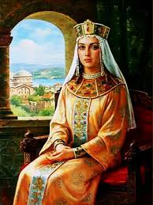

Княгиня Ольга, або Свята Ольга

Походження княгині Ольги
Ольга походила з боярського роду, що вже само по собі позначало її високе
соціальне становище в давньоруському суспільстві. Бояри були частиною
правлячої еліти, мали земельні володіння та відігравали ключову роль у
політичному житті держави. Походження з такої сім'ї надало Ользі не тільки
статус, але й доступ до освіти та управлінських навичок, які пізніше
допомогли їй ефективно керувати Київською Руссю.
Деякі джерела та легенди згадують, що Ольга могла бути правнучкою
Гостомисла — міфічного правителя Новгорода. Хоча ця інформація не має
достатнього історичного підтвердження, вона додає романтизму та глибини її
образу в історії. Гостомисла вважають легендарною постаттю, яка символізує
мудрість і далекоглядність, а таке походження підкреслює приписувані Ользі
якості лідерки та реформаторки.
Роль регентки княгині Ольги
Після смерті чоловіка Ігоря, якого убили древляни у 945 році, Ольга стала
регенткою Київської Русі, взявши управління країною на себе в ім'я
малолітнього сина
Святослава. Її роль регентки була визначальною для держави, яка перебувала
на переломному етапі своєї історії.
Одним із перших викликів для Ольги було забезпечити стабільність у країні
після раптової смерті Ігоря. Вона ефективно взяла на себе управлінські
функції, розв'язуючи внутрішні конфлікти та зміцнюючи централізовану владу,
що дало їй втримати контроль над різними частинами держави.
Дипломатичні зв'язки
Ольга активно працювала над розвитком дипломатичних відносин із
Візантійською імперією, яка в той час була однією з наймогутніших держав у
світі. Відносини між Київською Руссю та Візантією мали стратегічне
значення, оскільки
Візантія володіла значними економічними та культурними ресурсами, а також
контролювала важливі торговельні шляхи. Ольга здійснила кілька
дипломатичних поїздок до Константинополя, де вона вела переговори з
імператором Константином Багрянородним, сприяючи укладенню договорів, які
вигідно впливали на економіку і безпеку обох держав.
Ольга використовувала дипломатію для укладення мирних угод із сусідніми
племенами та державами. Це допомогло зменшити кількість військових
конфліктів і зосередити зусилля на внутрішньому розвитку держави.
Розвиток торговельних відносин
Київська Русь займала стратегічно важливе місце між Східною Європою і
Азією, що
робило її ключовим гравцем у торгівлі між Візантією, Скандинавією,
Центральною Азією та Близьким Сходом. Ольга використовувала це розташування
для розвитку торговельних шляхів, що проходили через територію Київської
Русі,
особливо шляху "з варяг у греки".
Зміцнення торговельних відносин було ще одним важливим аспектом
дипломатичної політики Ольги. Вона сприяла
розвитку
торгівлі між
Київською
Руссю та
іншими країнами, включно з Візантією
та арабськими державами. Це не
тільки
збагачувало Київську Русь, але й сприяло культурному обміну та
технологічному
прогресу.
Під керівництвом Ольги торговельні відносини розширилися, зокрема
експорт хутра, меду, воску, деревини та інших цінних товарів, які високо
цінували в Європі та Азії. Серед мпортних
товарів
були текстиль,
прикраси,
вино та спеції, що збагачували місцевий ринок.
Введення реформ
Однією з найважливіших реформ Ольги було введення регулярної системи
збору податків. До її правління податкова система була нерегулярною
та часто спричиняла конфлікти між різними регіонами і центральною владою.
Ольга встановила чіткі та єдині правила для збору податків, що визначали
фіксовані суми податків з кожного домогосподарства, значно спростивши
процес та зменшивши корупцію
Ольга започаткувала створення "погостів" — адміністративних і
торговельних центрів, які служили як місця для збору податків та данини, а
також як ринки і культурні центри. Ці погости відіграли важливу роль у
стабілізації економіки та забезпеченні ефективного управління територіями.
Їхня роль у зміцненні централізованої влади була вирішальною, оскільки вони
допомогли забезпечити постійний контроль за дистанційними регіонами.
Ольга також внесла зміни до правової системи, унормувавши застосування
законів по всій Київській Русі. Ці зміни охоплювали стандартизацію покарань
за
злочини та регулювання правил спадкування, що сприяло зменшенню правової
невизначеності та зміцненню соціального порядку.
Загадкова помста древлянам
У "Повісті минулих літ" княгиня Ольга зображена як визначна та сильна
правителька, а її взаємодія з древлянами показана як один із ключових
епізодів її правління. Легенди розповідають про жорстоку помсту Ольги за
вбивство її чоловіка, князя Ігоря, якого древляни заманили в пастку та
вбили, відмовившись платити данину
Древляни — плем'я, яке проживало на заході сучасної України, —
намагалися уникнути підпорядкування Києву. Вони запропонували Ользі вийти
заміж за їхнього князя Мала, сподіваючись заспокоїти її та встановити
союз. Ольга, вдаючи, що погоджується, запросила послів древлян до Києва,
де наказала закопати їх живцем. Після цього вона вирушила до землі
древлян, де хитрістю знищила місто Іскоростень..
Перша і остання
Ольга стала першою жінкою, яка правила Київською Руссю, зійшовши на
престол після
смерті чоловіка, князя Ігоря. Її правління вирізнялося значними
адміністративними, культурними і релігійними реформами, які вплинули на
подальший розвиток держави.
к регентка вона не тільки стабілізувала країну, але й зміцнила її
міжнародні зв'язки, зокрема з Візантією. Її рішення прийняти християнство
було ключовим кроком у християнізації Русі-України, що пізніше продовжив її
внук, Володимир Великий.
Ольга залишається унікальною постаттю в історії Київської Русі: вона була
першою і
останньою жінкою, яка правила цією країною. До княгині Ольги жінки не
займали такої високої позиції в ієрархії влади, а після неї також: жодна
жінка не керувала Україною донині.
Завдання Ecobazar
Maecenas lacinia felis nec placerat sollicitudin. Quisque placerat
dolor
at scelerisque imperdiet. Phasellus tristique felis dolor.
Maecenas elementum in risus sed condimentum. Duis convallis ante ac
tempus maximus. Fusce malesuada sed velit ut dictum. Morbi faucibus
vitae
orci at euismod. Integer auctor augue in erat vehicula, quis fermentum
ex
finibus.
Mauris pretium elit a dui pulvinar, in ornare sapien euismod. Nullam
interdum nisl ante, id feugiat quam euismod commodo. Sed ultrices lectus
ut
iaculis rhoncus. Aenean non dignissim justo, at fermentum turpis. Sed
molestie, ligula ut molestie ultrices, tellus ligula viverra neque,
malesuada consectetur diam sapien volutpat risus. Quisque eget tortor
lobortis, facilisis metus eu, elementum est. Nunc sit amet erat quis ex
convallis suscipit. ur ridiculus mus.